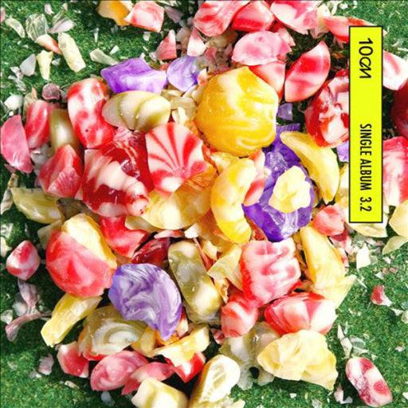
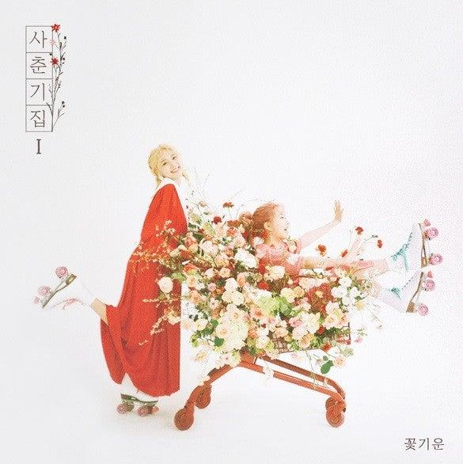
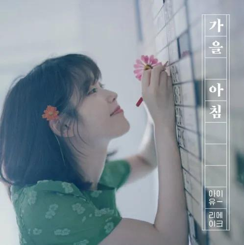
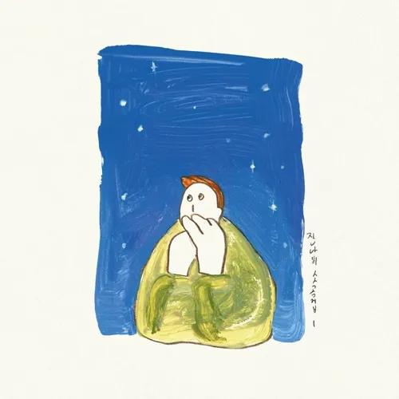
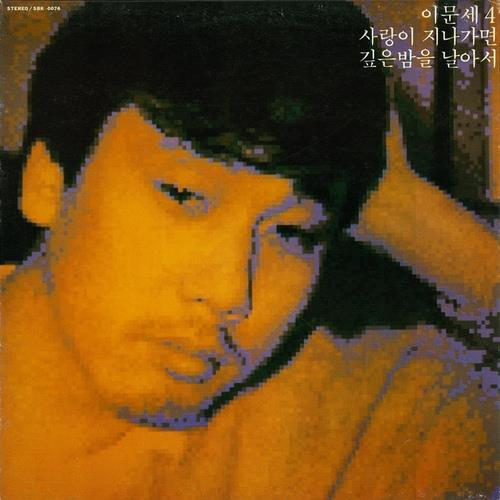
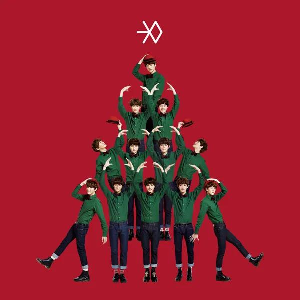
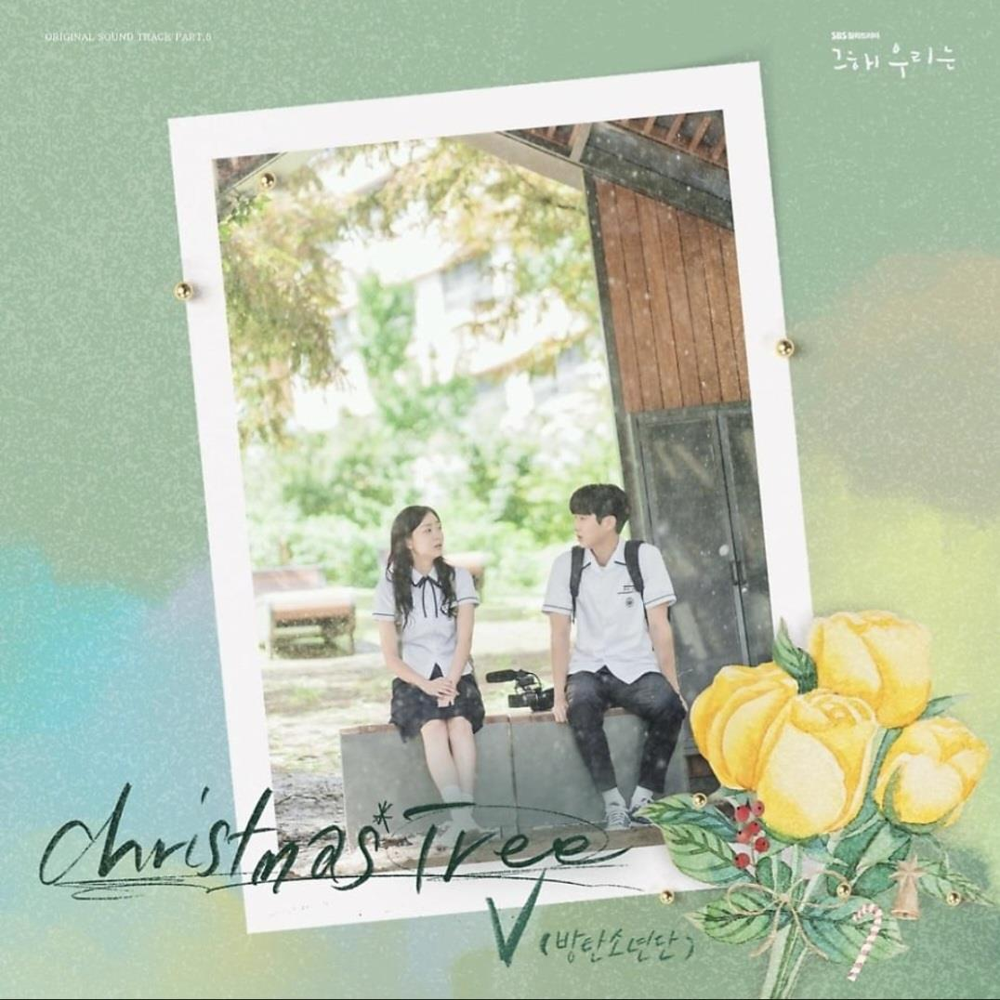

Select Season
당신의 감정에 맞는 계절을 선택해보세요.
Spring
설레는 시작
Summer
청량한 에너지
Autumn
깊어가는 감성
Winter
따뜻한 위로
당신의 감정에 맞는 계절을 선택해보세요.
살랑살랑 따뜻한 봄바람이 불어올 때


뜨거운 태양 아래 청량함이 필요할 때
서늘한 바람과 함께 깊어지는 감성



하얀 눈과 따뜻한 코코아 같은 음악

